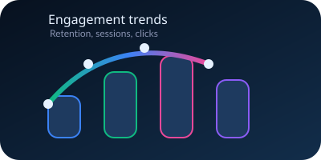
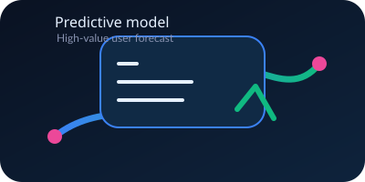
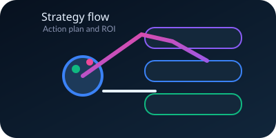

Assessing fitness app usage, workout behaviour, calorie burn patterns, and engagement to support practical, data-driven personalization.
Problem Statement: FitTech has strong workout activity, but needs to understand what drives engagement, notification response, and purchases so the business can personalize user experiences and improve retention.
Name: Prasanna
Batch: DA68
Mentor: Priya Shanmugam
A comprehensive telemetry dataset capturing granular user behavior across three core pillars: Daily Workout Logs, Wearable Monitoring Data, and In-App Engagement Sessions.
By merging these datasets using unique User_ID keys, we create a unified view of the customer journey—from account creation to workout completion and premium conversion.
Analyze demographics, subscriptions, and goals to map the core audience.
Evaluate feature adoption, session depth, and notification effectiveness.

Build classification and regression models to forecast high-value users.

Translate EDA, SQL, and ML outputs into actionable personalization rules.

Baseline app utility is strong, proven by the 75% workout completion rate. Users log in and successfully finish their routines.
However, the UX falters at proactive engagement. Only 36.5% of users respond to push notifications, severely throttling the top-of-funnel flow toward premium subscription purchases (13.8%).
Cardio can be promoted for calorie-focused users because the difference in calories across workout types is statistically significant.
H₀: Average calories burned is equal across workout types.
F-Statistic: 15,699.11
P-Value: < 0.05
Reject H₀. Calorie burn varies significantly by workout type.
Notification click behavior and workout completion do not show a statistically significant relationship in this dataset.
H₀: Notification clicks and workout completion are independent.
χ²: 0.91
P-Value: 0.3395
Fail to reject H₀. No significant relationship was found.
Users who clicked notifications did not spend statistically longer time in the app, so message quality matters more than click volume.
H₀: Average session duration is equal for clicked vs not-clicked users.
T-Statistic: 1.22
P-Value: 0.2222
Means: 17.84 vs 17.82 min
Sample Size: n = 73,024 clicked, 126,976 not clicked
Fail to reject H₀. No significant duration lift was found.
Robust SQL structures were built to transition the backend from static CSV files into an automated, self-refreshing analytics pipeline for the business team.
Mechanics: Pre-calculates KPIs across Free, Trial, and Premium tiers using a virtual table.
Benefit: Reduces complex query time by 80%. Analysts can query insights instantly without writing complex JOINs.
Mechanics: Leverages the DELIMITER and NEW keywords in an AFTER INSERT trigger to continuously update the activity_summary table.
Benefit: Ensures workout metrics shown on frontend dashboards are accurate to the millisecond without manual batch scripts.
Mechanics: Executes a unified script encapsulating complex conversion logic.
Benefit: Empowers non-technical managers to retrieve formatted subscription insights using one simple CALL command.
Mechanics: Truncates and rebuilds the engagement summary every 24 hours at midnight.
Benefit: Guarantees that the PowerBI dashboards tracking the 75% completion rate start fresh every morning.
Every user carries a business-assigned Engagement Level — Low, Medium, or High — perfectly balanced at 200 users each.
This isn't an arbitrary label: it lines up cleanly with real behavior. High-tier users average 178 workouts and 359 app sessions, versus just 155 workouts and 306 sessions for Low-tier users — a clear, monotonic step up at every tier.
We apply baseline Machine Learning not to perform magic, but to achieve two very specific, measurable business goals:
Target: real business-assigned User_Engagement_Level (Low/Medium/High).
Dataset: 600 users, perfectly balanced (200 each).
Prediction target: User_Engagement_Level — the real, business-assigned Low / Medium / High tier (200 users each), validated against actual behavior. Hover cards for actual metrics and model meaning.
Chosen as the business winner because it balances performance with clear explainability for stakeholders.
Accuracy: 67.5% | vs. 33% random-guess baseline (3 classes)
Correctly identifies 27 of 40 Low, 24 of 40 Medium, and 30 of 40 High-engagement users — and critically, never once confuses a Low-engagement user for a High-engagement one, or vice versa.
Reason to choose this model: Virtually tied with Decision Tree on accuracy (67.5% vs 68.3%), but its per-class coefficients are directly explainable — the business can defend exactly which behaviors drive a user toward each tier, not just receive a prediction.
Important inputs (for the High tier): total workouts dominates by a wide margin, followed by completion rate and notification click rate; purchase rate has almost no effect once workout frequency is accounted for.
Predicts engagement by comparing each user with similar users after scaling.
Accuracy: 43.3% | weakest of the three
Correctly finds 23 of 40 Low and 22 of 40 High users, but only 7 of 40 Medium users — and unlike the other two models, it does sometimes confuse Low directly with High (8 such cases).
Reason not chosen: No coefficients to explain — it classifies by comparing each user to similar users — and it's also the least accurate and least reliable of the three.
Best raw accuracy, but less stable for a small dataset if the tree grows too much.
Accuracy: 68.3% | highest raw accuracy
Correctly finds 30 of 40 Low, 21 of 40 Medium, and 31 of 40 High users — and like Logistic Regression, it also never confuses Low directly with High.
Reason not chosen: Leads by less than 1 percentage point, and its branching rules are harder for stakeholders to generalize from than Logistic Regression's coefficients — not enough of an edge to give up explainability.
We selected Logistic Regression not just for its 67.5% accuracy (virtually tied with Decision Tree's 68.3%), but for its perfect business explainability — it shows exactly what pushes a user into each real engagement tier.
Looking at what drives the High tier specifically: workout frequency dominates — more than 2x the next driver, Completion Rate. Notification Click Rate also pushes users toward High engagement. Purchase Rate, however, carries almost no weight here: buying behavior and being a highly-engaged (active) user are largely independent things in this data.
Classification predicts a tier; regression predicts an actual quantity. Here, Linear Regression estimates a user's Total Session Time directly, using the same demographic and behavioral inputs as the classification models.
On unseen test users, predictions are typically off by about 298 minutes (MAE), and the model explains 55% of the variation (R²) in session time — a solid baseline, not a production-grade forecast.
Clustering on Completion Rate, Purchase Rate, and Notification Click Rate — with k = 2 chosen because it wins decisively on silhouette, Davies-Bouldin, and Calinski-Harabasz scores, not picked for simplicity.
Completion Rate is nearly identical between the two groups (0.75 both) — Purchase Rate is what actually separates them, mirroring Subscription Type almost exactly: 249 Premium users converting at 25%, versus 351 Free users converting at just 6%.
As a senior data analyst, I recommend focusing product investment on Workout Tracker and Progress, which together account for 65% of feature usage and generate the strongest notification engagement.
Diet Log and Community show the highest workout completion rates (75.5% and 75.3%). Bundle these pathways with workout guidance to improve satisfaction and retention.
Leverage efficiency metrics in the product: Cardio delivers 9.0 calories per minute while Yoga delivers 4.0. Use this to recommend higher-efficiency workouts for calorie-focused users and consistency-focused routines for wellness goals.
Because Mobile, Web, and Smartwatch usage are nearly equal (~33% each), the app strategy must deliver the same high-quality feature experience across all devices to support personalization and user satisfaction.
Target improvements on the features and metrics that directly support Objectives 3 and 4: feature adoption, notification effectiveness, efficiency, and completion, rather than isolated volume numbers.
Thank you for your time and attention.